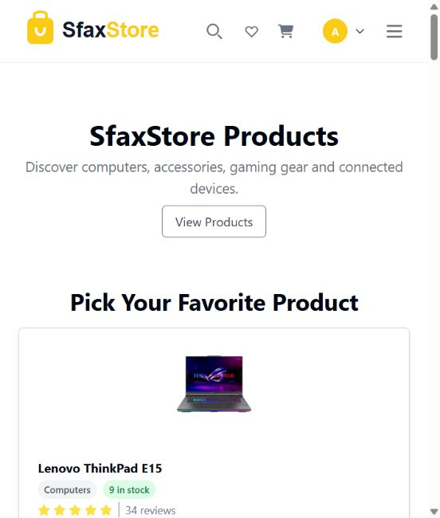
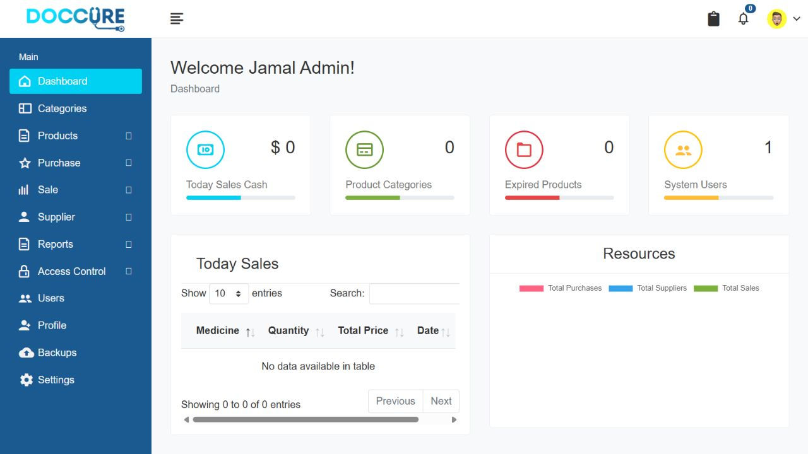
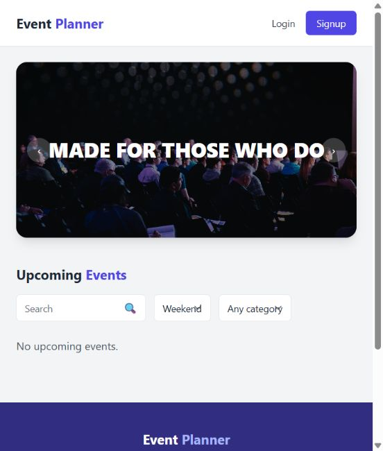
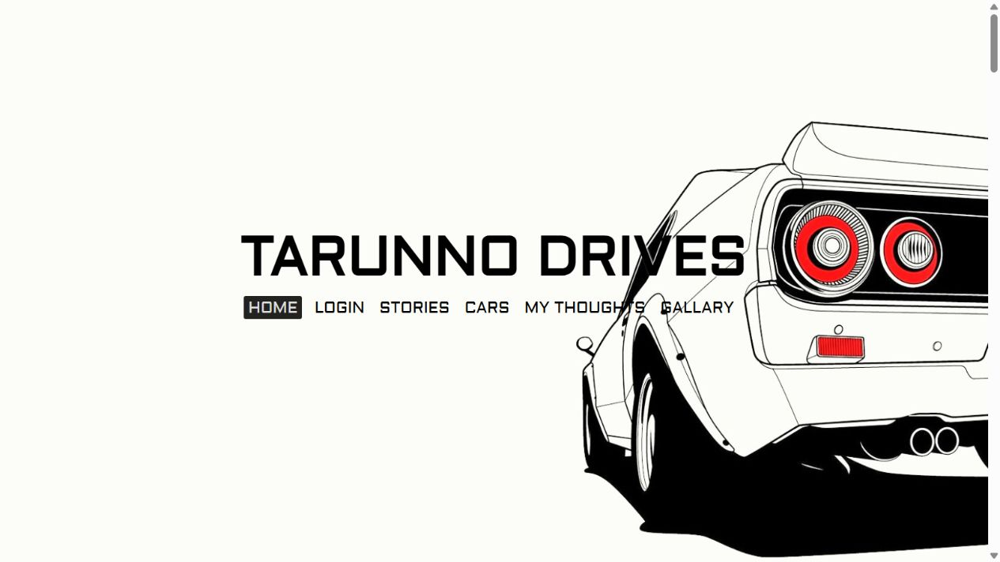

Web Development
Application interfaces and backend workflows using Angular, Laravel and ASP.NET Core.


Hello, I'm Yessine Choura. I'm a computer engineering student actively searching for a final-year internship in networks and cybersecurity starting in February 2027. I enjoy building sites & apps.
 ⟶
⟶
Hello, I'm Yessine Choura. I'm a computer engineering student actively searching for a final-year internship in networks and cybersecurity starting in February 2027. I enjoy building sites & apps.
⟶Currently a computer engineering student at the International Institute of Technology (IIT) in Sfax, Tunisia, specializing in Network Administration and Information Security.
Actively searching for a final-year internship opportunity starting in February 2027.
Through internships and academic projects, I've gained experience in web development, network security and deployment. I am always looking to learn new technologies.
Front-end Angular · TypeScript · JavaScript
Back-end Laravel · PHP · ASP.NET Core · C#
Operating Systems Linux · Windows
Networks & Security pfSense · WireGuard · Snort · Shuffle
Deployment & Monitoring Docker · Kubernetes · Grafana
Databases PostgreSQL · MySQL
IIT, Sfax · 2024–2027 (expected)
Software Engineering and Information Systems
IIT · 2021–2024
CCNA: Switching, Routing, and Wireless Essentials · 2026
IT Specialist — Python · 2024
Scrum Fundamentals Certified · 2023
Areas I work on through my studies, internships and projects.
Application interfaces and backend workflows using Angular, Laravel and ASP.NET Core.
Network filtering, VPN access, detection and automated incident response in lab environments.
Linux, Docker and K3s deployments, with Grafana dashboards for monitoring.
These are some of my completed projects.
Security & infrastructure
An OACA internship project combining baggage tracking with JWT access, user roles, HTTPS and a WireGuard VPN. Deployed with Docker and Kubernetes (K3s).
Angular · ASP.NET Core · PostgreSQL
Security & infrastructure
A team SOC/SOAR lab: detect suspicious traffic, orchestrate IP blocking and monitor security alerts. Detection and blocking validated in a Kali Linux / Metasploitable environment.
Snort · Shuffle · pfSense · Grafana

03Web applications
An online store with a product catalog, shopping cart, favorites and order management.
Angular · TypeScript · Tailwind CSS

04Web applications
Built during my Medicacom internship: purchases, products, inventory, sales, user roles and report exports.
PHP · Laravel · PostgreSQL

05Web applications
Event and registration management with an administrator dashboard.
PHP · Laravel · Tailwind CSS

06Web applications
A full-stack car sales application with vehicle browsing and order management.
PHP · JavaScript · Bootstrap

JUL — AUG 2026
Developed baggage tracking with JWT, role-based access, HTTPS and WireGuard. Deployed using Docker and K3s on an OVH VPS, with network filtering validation.
AUG 2025
Built user and role administration and pharmacy workflows for purchases, inventory, sales and report exports.
FEB — AUG 2024
Enhanced authentication, settings and learning materials using ASP.NET MVC and PostgreSQL.
AUG — SEP 2023
Developed authentication, vacancies, job search and user profiles with PHP, from UML planning to implementation.
Looking for a final-year internship in networks and cybersecurity from February 2027.
yessine1choura@gmail.com ↗